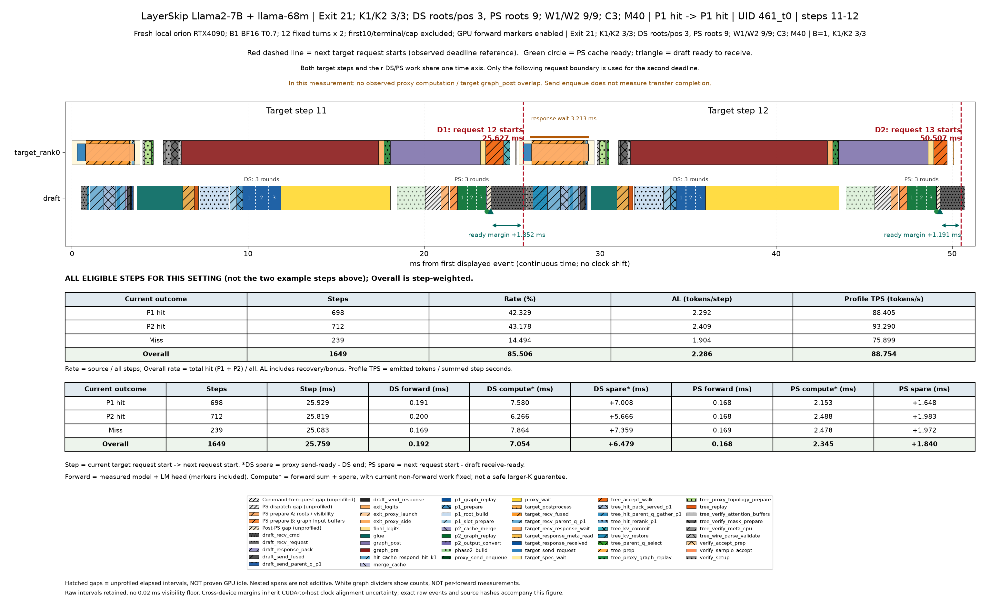
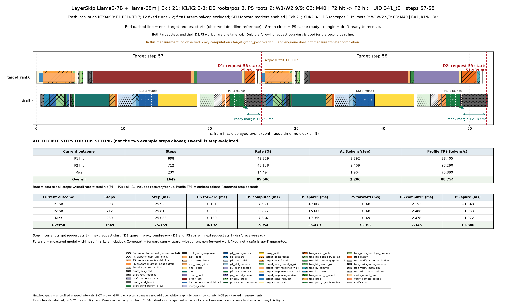
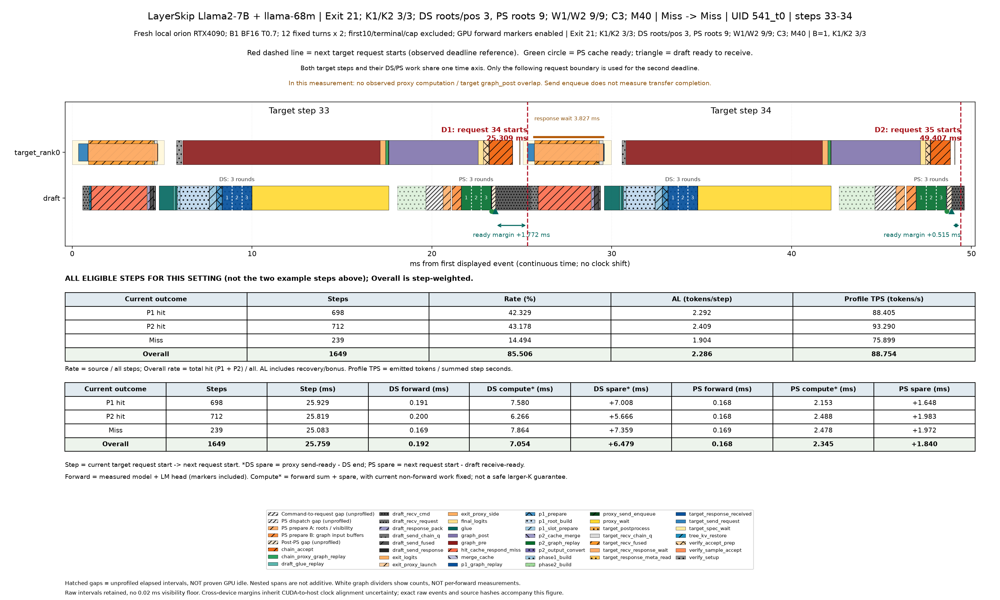
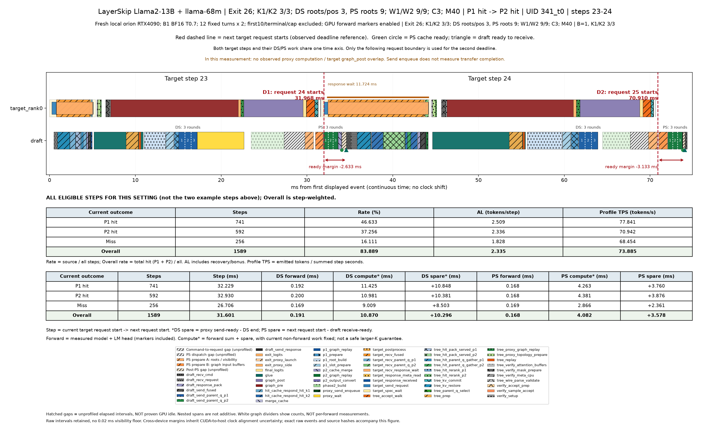
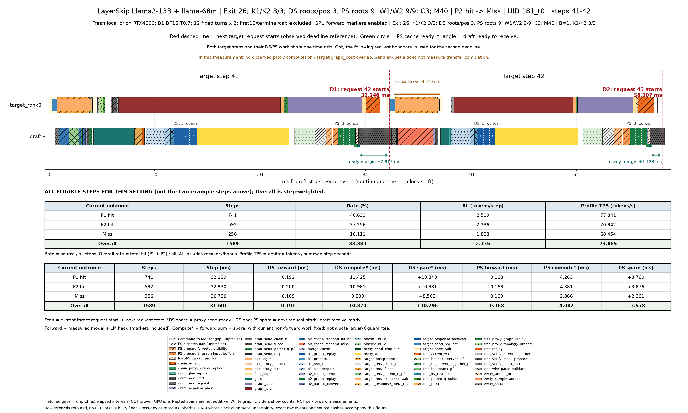
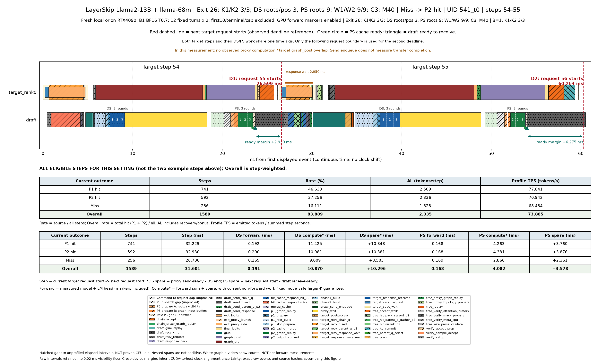

전체 PDF · 설정·해석 · 경우별·전체 평균 CSV · 대표 step 원시 시각
모델마다 PDF 하나입니다. 각 페이지는 같은 요청의 연속 두 step이며 P1 hit / P2 hit / miss를 구분합니다. 같은 모델의 여러 설정은 같은 PDF 안에서 구분합니다.
빨간 점선: 다음 target 요청 시작(deadline 기준). 초록 원: PS cache 완성. 삼각형: draft 수신 준비. 흰 점선은 forward 횟수 표시이며 실측 개별 forward 경계가 아닙니다. 양수 여유 시간이 모두 추가 계산 예산이라는 뜻은 아닙니다.
표는 P1 hit·P2 hit·Miss·Overall(전체 평균)의 네 행입니다. 그림 위의 두 step은 실제 예시이고, 표는 해당 설정의 유효 step 전체 평균입니다. Step: 현재 target 요청 시작→다음 요청 시작. DS/PS total: 준비·정리 포함 phase 시간. DS spare*: proxy 전송 준비 완료−DS 완료(수신 도착 시점은 아님). PS spare: 다음 target 요청 시작−draft 수신 준비. 양수는 여유, 음수는 초과입니다. Graph/K1·K2는 graph 시간을 forward 횟수로 나눈 값이며 sampling·tree 선택을 포함합니다.
분류는 현재 step에서 사용한 cache 기준입니다. 전체 평균은 실제 step 수로 가중합니다. 표본이 없으면 0 대신 N/A입니다.
Rate는 P1/P2 hit·miss의 발생 비율이며, Overall 행에서는 전체 cache hit rate를 표시합니다. AL은 recovery/bonus를 포함한 수락 길이입니다. Profile TPS는 같은 유효 step의 실제 반환 토큰 합÷시간 합으로, profile OFF 또는 전체 데이터셋 TPS와 구분합니다. 토큰 수 기록이 없으면 AL/TPS를 추정하지 않고 N/A로 표시합니다.
Proxy 계산과 target 후반 forward의 중첩 여부는 설정별로 기록에서 계산합니다. exit_proxy_side라는 이름만으로 별도 stream 실행을 뜻하지 않습니다. 전송은 비동기 enqueue만 기록되어 실제 통신 완료·중첩 시간은 알 수 없습니다. Target와 별도 draft GPU의 병렬 실행과는 별개입니다.
기존 raw 기록의 후처리입니다. 측정 버전·환경은 모델별 설명을 확인하세요. 다른 서버/설정의 절대 시간을 직접 비교하여 개선으로 해석하지 않습니다.
Fresh local orion RTX4090; B1 BF16 T0.7; 12 fixed turns x 2; first10/terminal/cap excluded; GPU forward markers enabled
Fresh local orion RTX4090; B1 BF16 T0.7; 12 fixed turns x 2; first10/terminal/cap excluded; GPU forward markers enabled
| Current outcome | Steps | Rate (%) | AL (tokens/step) | Profile TPS (tokens/s) |
|---|---|---|---|---|
| P1 hit | 698 | 42.329 | 2.292 | 88.405 |
| P2 hit | 712 | 43.178 | 2.409 | 93.290 |
| Miss | 239 | 14.494 | 1.904 | 75.899 |
| Overall | 1649 | 85.506 | 2.286 | 88.754 |
Rate: 전체 step 중 해당 경우의 비율. Overall 행은 전체 hit rate(P1+P2 비율). AL은 recovery/bonus 포함. TPS는 같은 유효 profile step의 반환 토큰 합÷시간 합.
| Current outcome | Steps | Step (ms) | DS forward (ms) | DS compute* (ms) | DS spare* (ms) | PS forward (ms) | PS compute* (ms) | PS spare (ms) |
|---|---|---|---|---|---|---|---|---|
| P1 hit | 698 | 25.929 | 0.191 | 7.580 | +7.008 | 0.168 | 2.153 | +1.648 |
| P2 hit | 712 | 25.819 | 0.200 | 6.266 | +5.666 | 0.168 | 2.488 | +1.983 |
| Miss | 239 | 25.083 | 0.169 | 7.864 | +7.359 | 0.169 | 2.478 | +1.972 |
| Overall | 1649 | 25.759 | 0.192 | 7.054 | +6.479 | 0.168 | 2.345 | +1.840 |
Proxy 계산 ↔ target 후반 forward 중첩: 0/1649 step, 전체 step 평균 중첩 0.000ms. 전송 완료 시간은 미계측.
유효 step 평균 target query: 12.629개(padding 전), 기존 KV 문맥: 300.333 tokens. Query 수와 문맥 길이는 다른 양이다.



Fresh local orion RTX4090; B1 BF16 T0.7; 12 fixed turns x 2; first10/terminal/cap excluded; GPU forward markers enabled
Fresh local orion RTX4090; B1 BF16 T0.7; 12 fixed turns x 2; first10/terminal/cap excluded; GPU forward markers enabled
| Current outcome | Steps | Rate (%) | AL (tokens/step) | Profile TPS (tokens/s) |
|---|---|---|---|---|
| P1 hit | 741 | 46.633 | 2.509 | 77.841 |
| P2 hit | 592 | 37.256 | 2.336 | 70.942 |
| Miss | 256 | 16.111 | 1.828 | 68.454 |
| Overall | 1589 | 83.889 | 2.335 | 73.885 |
Rate: 전체 step 중 해당 경우의 비율. Overall 행은 전체 hit rate(P1+P2 비율). AL은 recovery/bonus 포함. TPS는 같은 유효 profile step의 반환 토큰 합÷시간 합.
| Current outcome | Steps | Step (ms) | DS forward (ms) | DS compute* (ms) | DS spare* (ms) | PS forward (ms) | PS compute* (ms) | PS spare (ms) |
|---|---|---|---|---|---|---|---|---|
| P1 hit | 741 | 32.229 | 0.192 | 11.425 | +10.848 | 0.168 | 4.263 | +3.760 |
| P2 hit | 592 | 32.930 | 0.200 | 10.981 | +10.381 | 0.168 | 4.381 | +3.876 |
| Miss | 256 | 26.706 | 0.169 | 9.009 | +8.503 | 0.169 | 2.866 | +2.361 |
| Overall | 1589 | 31.601 | 0.191 | 10.870 | +10.296 | 0.168 | 4.082 | +3.578 |
Proxy 계산 ↔ target 후반 forward 중첩: 0/1589 step, 전체 step 평균 중첩 0.000ms. 전송 완료 시간은 미계측.
유효 step 평균 target query: 12.785개(padding 전), 기존 KV 문맥: 273.986 tokens. Query 수와 문맥 길이는 다른 양이다.


